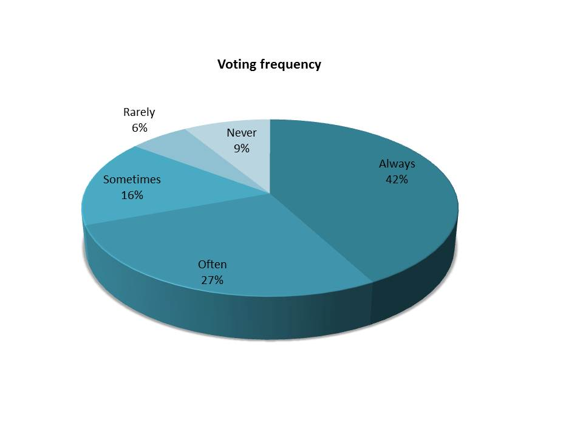
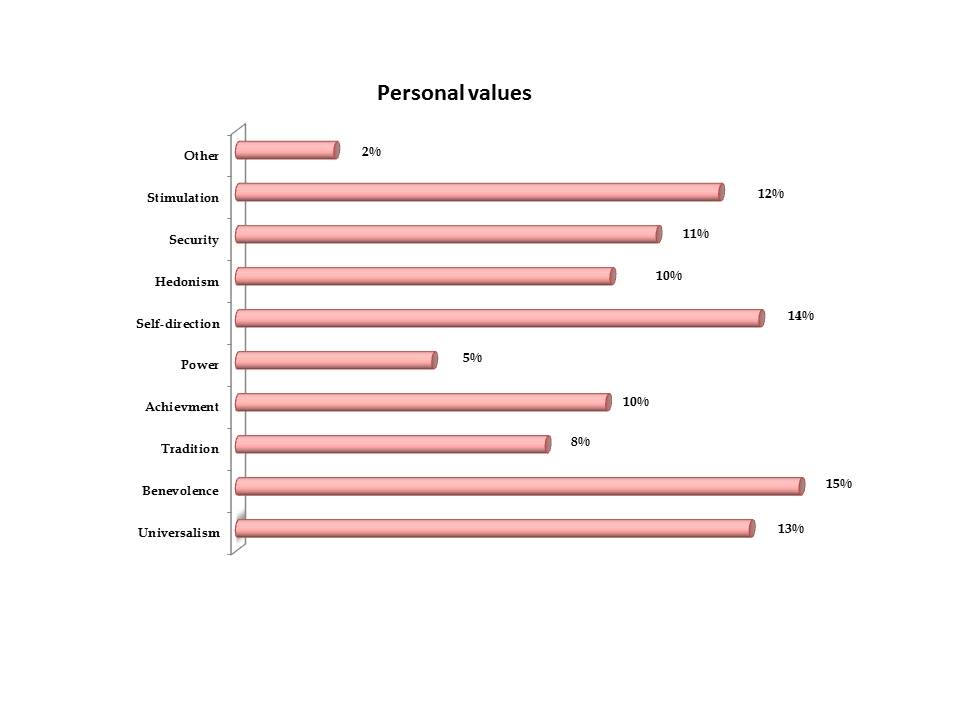

2010 After Burn Report
Welcome
While BRC Census has been producing reports since 2002, it is hard to compare recent data with reports from earlier years (before 2013) because of important differences in methodology, from a convenience sample of self-selected Census takers on-playa to a weighted online survey conducted after the Man burns.
About You
Age

Education
Highest level of education completed

Income
Percentage of respondents with annual income in range

Marriage
Marriage status

Race and Ethnicity
Do you consider yourself a person of color?

Voting
Eligible to vote in the USA

Voting frequency

Values
Most Important Personal Values

Personal values

At Burning Man
Dates
Participant Arrival Date

Date of census completion

Participant Departure Date

Theme Camp
Is your camp a theme camp?